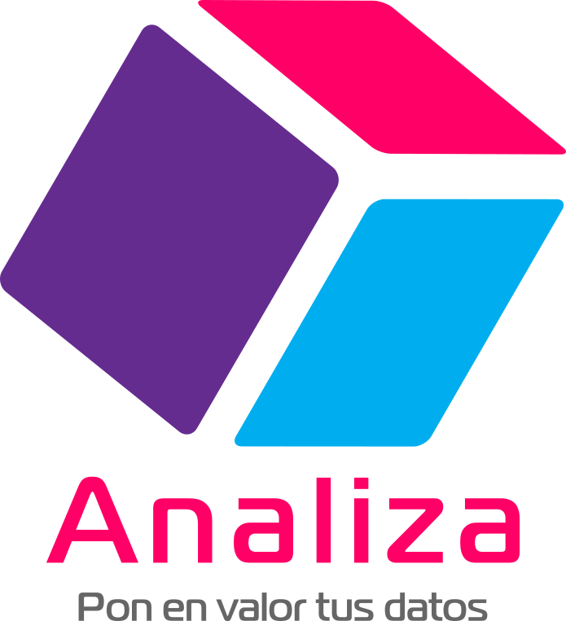

<!doctype html>
<html lang="en">
    <head>
        <meta charset="utf-8">
        <title>RevealJS : /media/alf/datos/web/analiza/index.md</title>
        <link rel="stylesheet" href="css/reveal.css">
        <link rel="stylesheet" href="css/theme/black.css" id="theme">
         <link rel="stylesheet" href="custom.css" id="theme">
       
        <!-- For syntax highlighting -->
        <link rel="stylesheet" href="lib/css/Zenburn.css">

        

        <!-- If the query includes 'print-pdf', use the PDF print sheet -->
        <script>
          document.write( '<link rel="stylesheet" href="css/print/' + ( window.location.search.match( /print-pdf/gi ) ? 'pdf' : 'paper' ) + '.css" type="text/css" media="print">' );
        </script>

        <style type="text/css">
            @page {    
              margin: 0;
              size: auto; 
            }
        </style>

        <script>
         if(window.location.search.match( /print-pdf-now/gi )) {
           window.print();
         }
      </script>

    </head>
    <body>

        <div class="reveal">
            <div class="slides"><section  data-markdown><script type="text/template">
<script src="http://ajax.googleapis.com/ajax/libs/jquery/1.9.1/jquery.min.js">__SCRIPT_END__



[www.analiza.org]()
</script></section><section  data-markdown><script type="text/template">
## Presentación

Analiza es una cooperativa de trabajo asociado especializada en la extracción de conocimiento por medio de la recolección, análisis e interpretación de datos.

> ¡¡¡Si tienes datos, tienes un tesoro!!!  
> Nosotras te ayudamos a extraerlo.  
> 
</script></section><section ><section data-markdown><script type="text/template">
## Servicios

### Análisis de datos

- Diseño y planificación de experimentos
- Diseño de formularios de recogida de datos
- Diseño de bases de datos
- Visualización de datos
- Análisis estadístico (descriptivo e inferencial)
- Extracción de patrones, reglas y tendencias
- Modelos predictivos
- Minería de datos (Big data)
</script></section><section data-markdown><script type="text/template">
### Formación

- Estadística Aplicada
- Inteligencia Artificial
- Bases de datos (SQL, Mongo, Json)
- Aplicaciones de análisis de datos (R, SPSS, Python, Weka, Spark, Knime)
</script></section></section><section ><section data-markdown><script type="text/template">
## CANVAS


</script></section><section data-markdown><script type="text/template">
### Propuesta de valor

<table class='colortable' style='border-collapse: collapse; margin-top: 1em; margin-bottom: 1em;' >
<col width="500">
<col width="500">
<thead>
<tr>
<th style='border-bottom: 1px solid grey; border-top: 2px solid grey; text-align: center;'>Necesidades</th>
<th style='border-bottom: 1px solid grey; border-top: 2px solid grey; text-align: center;'>Soluciones</th>
</tr>
</thead>
<tbody>
<tr>
<td style='text-align: left;'>
Mejorar la calidad de los datos
</td>
<td style='text-align: left;'>
Diseño y depuración de bases de datos
</td>
</tr>
<tr>
<td style='text-align: left;'>
Desconocimiento del valor oculto en los datos
</td>
<td style='text-align: left;'>
Presentaciones y casos de ejemplo
</td>
</tr>
<tr>
<td style='text-align: left;'>
Conocer mejor a los clientes  
Diversificar y focalizar la oferta
</td>
<td style='text-align: left;'>
Identificación de perfiles y redes
</td>
</tr>
<tr>
<td style='border-bottom: 2px solid grey; text-align: left;'>
Conocer los sentimientos hacia la empresa
</td>
<td style='border-bottom: 2px solid grey; text-align: left;'>
Análisis de redes sociales, blog, comentarios y valoraciones
</td>
</tr>
<tr>
<td style='text-align: left;'>
Reducir costes
</td>
<td style='text-align: left;'>
Análisis y optimización de procesos
</td>
</tr>
<tr>
<td style='border-bottom: 2px solid grey; text-align: left;'>
Mejora de la toma de decisiones
</td>
<td style='border-bottom: 2px solid grey; text-align: left;'>
Identificación y minimización de riesgos
</td>
</tr>
<tr>
<td style='border-bottom: 2px solid grey; text-align: left;'>
Pocos conocimientos de Estadística
</td>
<td style='border-bottom: 2px solid grey; text-align: left;'>
Formación adaptada
</td>
</tr>
</tbody>
</table>
</script></section><section data-markdown><script type="text/template">
#### Ventaja diferencial

- Amplia experiencia
- Innovación continua
- Combinación del Análisis de datos con la formación para la interpretación de resultados.
- Uso de software libre
- Precios asequibles para la pequeña y mediana empresa (especialmente de la Economía Social)
</script></section><section data-markdown><script type="text/template">
### Segmentos de clientes

<table class='colortable' style='border-collapse: collapse; margin-top: 1em; margin-bottom: 1em;' >
<col width="20">
<col width="500">
<col width="500">
<thead>
<tr>
<th style='border-bottom: 1px solid grey; border-top: 2px solid grey; text-align: center;'></th>
<th style='border-bottom: 1px solid grey; border-top: 2px solid grey; text-align: center;'>Grandes empresas</th>
<th style='border-bottom: 1px solid grey; border-top: 2px solid grey; text-align: center;'>Pequeña y mediana empresa</th>
</tr>
</thead>
<tbody>
<tr>
<td style='text-align: right;' class="rotate"><div>Clientes</div></td>
<td style='text-align: left;'>
Hospitales  
Empresas biotecnológicas  
Banca  
Energéticas  
Telecomunicaciones  
Comercio electrónico  
Administraciones públicas  
</td>
<td style='text-align: left;'>
Economía social ???  
Cooperativas  
Comercio electrónico
</td>
</tr>
<tr>
<td style='border-bottom: 2px solid grey; text-align: right;' class="rotate"><div>Servicios</div></td> 
<td style='border-bottom: 2px solid grey; text-align: left;'>
Análisis de datos  
Extracción de conocimiento  
Formación Estadística e Inteligencia Artificial  
Formación aplicaciones
</td>
<td style='border-bottom: 2px solid grey; text-align: left;'>
Asesoría recolección y explotación de datos  
Formación bases de datos</td>
</tr>
</tbody>
</table>
</script></section><section data-markdown><script type="text/template">
### Relaciones con clientes (Estrategias de comunicación)

- Sitio web
    - Formulario de contacto
    - Blog
    - Foros de clientes
    - Preguntas frecuentes (FAQs)
    - Encuestas de satisfacción
- Correo electrónico
- Teléfono
- Redes sociales
- Campañas de publicidad web y redes sociales
</script></section><section data-markdown><script type="text/template">
### Canales de distribución

- Sitio Web
- Herramientas de trabajo colaborativo
</script></section><section data-markdown><script type="text/template">
### Actividades clave

- Captación de nuevos clientes
- **Mantenimiento de la web**
- Actividad en las redes sociales
- **Comunicación e interacción con los clientes**
- **Preparación e impartición de cursos de formación**
- **Análisis de datos**
</script></section><section data-markdown><script type="text/template">
### Recursos clave

- Creación de la marca Analiza
- Alojamiento de la web en un servidor
- Teléfonos móviles
- 3 ordenadores
- Acceso a internet
- Correo electrónico
- Software
</script></section><section data-markdown><script type="text/template">
### Alianzas

Prescriptores:

- Antiguos clientes
- Empresas de la economía social (como Tangente)
- Empresas de elaboración de sondeos y encuestas
</script></section><section data-markdown><script type="text/template">
### Entradas de recursos económicos

#### Financiación

- Financiación propia

#### Ingresos

- Tarificación por servicios
    - Precio por proyecto para grandes empresas
    - Precio por horas para las pequeñas y medianas (20€ hora)
</script></section><section data-markdown><script type="text/template">
### Salidas de recursos económicos

#### Inversión inicial

- Capital para la constitución de la cooperativa (1800€)
- Campaña de publicidad en web y redes sociales (200€ mensuales x 3 meses)

#### Gastos

- Alquiler del servidor para la web (50€ mensuales)
- Cotización a la Seguridad Social (377€ mensuales)
- Impuestos (?)
</script></section></section><section  data-markdown><script type="text/template">
## Formula jurídica empresarial

- Cooperativa de trabajo asociado de 3 socios con igual aportación de capital
- Régimen General de la Seguridad Social</script></section></div>
        </div>

        <script src="lib/js/head.min.js"></script>
        <script src="js/reveal.js"></script>

        <script>
            function extend() {
              var target = {};
              for (var i = 0; i < arguments.length; i++) {
                var source = arguments[i];
                for (var key in source) {
                  if (source.hasOwnProperty(key)) {
                    target[key] = source[key];
                  }
                }
              }
              return target;
            }
            // Optional libraries used to extend on reveal.js
            var deps = [
              { src: 'lib/js/classList.js', condition: function() { return !document.body.classList; } },
              { src: 'plugin/markdown/marked.js', condition: function() { return !!document.querySelector('[data-markdown]'); } },
              { src: 'plugin/markdown/markdown.js', condition: function() { return !!document.querySelector('[data-markdown]'); } },
              { src: 'plugin/highlight/highlight.js', async: true, callback: function() { hljs.initHighlightingOnLoad(); } },
              { src: 'plugin/notes/notes.js', async: true, condition: function() { return !!document.body.classList; } },
              { src: 'plugin/math/math.js', async: true }
            ];
            // default options to init reveal.js
            var defaultOptions = {
              controls: true,
              progress: true,
              history: true,
              center: true,
              transition: 'default',
              dependencies: deps
            };
            // options from URL query string
            var queryOptions = Reveal.getQueryHash() || {};
            var options = {
  "notesSeparator": "note:",
  "separator": "\n---\n",
  "verticalSeparator": "\n----\n",
  "theme": "black",
  "highlightTheme": "Zenburn",
  "controls": true,
  "progress": true,
  "slideNumber": false,
  "history": true,
  "keyboard": true,
  "overview": true,
  "center": true,
  "touch": true,
  "loop": false,
  "rtl": false,
  "shuffle": false,
  "fragments": true,
  "embedded": false,
  "help": true,
  "showNotes": false,
  "autoSlide": 0,
  "autoSlideStoppable": true,
  "mouseWheel": false,
  "hideAddressBar": true,
  "previewLinks": false,
  "transition": "default",
  "transitionSpeed": "default",
  "backgroundTransition": "default",
  "viewDistance": 3,
  "parallaxBackgroundImage": "",
  "parallaxBackgroundSize": "",
  "parallaxBackgroundHorizontal": null,
  "parallaxBackgroundVertical": null,
  "slideExplorerEnabled": true,
  "browserPath": null,
  "title": "Analiza",
  "author": "Alfredo Sánchez Alberca",
  "customTheme": "custom",
  "revealOptions": {
    "transition": "convex",
    "center": true
  },
  "attributes": ""
};
            options = extend(defaultOptions, options, queryOptions);
            Reveal.initialize(options);

        </script>
        
    </body>
</html>